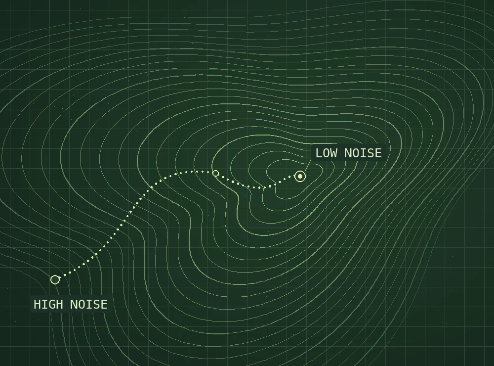

A Quantum-Assisted Surrogate for ATLAS Calorimeter Showers
A generative model for simulating particle showers in the ATLAS calorimeter, with a latent prior sampled on a quantum annealer.
ATLAS public resultsUniversity of British Columbia
Undergraduate machine learning researcher
I’m a Data Science undergraduate at UBC. I study how generative models can use computation more effectively at inference time, and how to evaluate their reliability in practice.

Diffusion transformers for image and video generation, and learned surrogates for scientific simulation.
Recurrent computation, activation caching, and adapting compute across denoising steps.
How language models reason, use tools, and ground their answers in evidence.
A generative model for simulating particle showers in the ATLAS calorimeter, with a latent prior sampled on a quantum annealer.
ATLAS public resultsA model for how often a rigid body flips when rotated about its intermediate axis, tested with gyroscope measurements.
I study how to adjust inference compute across denoising steps to improve the quality of image and video generation.
I build evaluations for open-ended legal questions that check whether models retrieve the right cases and whether the sources support their claims.
ReSeSS LabA career exploration prototype that uses retrieval-augmented generation to connect a person’s experience and interests to occupations in O*NET.
UBC hackathon recap